Moving listings
to a new vendor
The platform had to move its business listings to a new vendor by a fixed deadline. Choosing the vendor wasn’t my call. I made sure the evaluation measured what users needed, and that they’d get the same experience whichever vendor won.
Two years to switch vendors
The platform had to replace its listings vendor on a fixed deadline, with the new partner fully live by 2028. I led design and research, and my job was to make sure the switch didn’t quietly make the experience worse.
The decision had four parts: which vendor and what kind of integration, how the change would affect existing users, what a new backend would make possible, and how to get PMs, dev leads, marketing and support to agree.
Who we designed for
Our persona was a roofer who runs her own business. We scored every option on whether it would help her, rather than on what the platform could technically do.
What businesses are paying for
They want to show up when someone asks an AI search tool, not only in directory listings.
A gap in the research
None of the earlier studies covered reconnecting listings to a new vendor, because that flow didn’t exist yet.
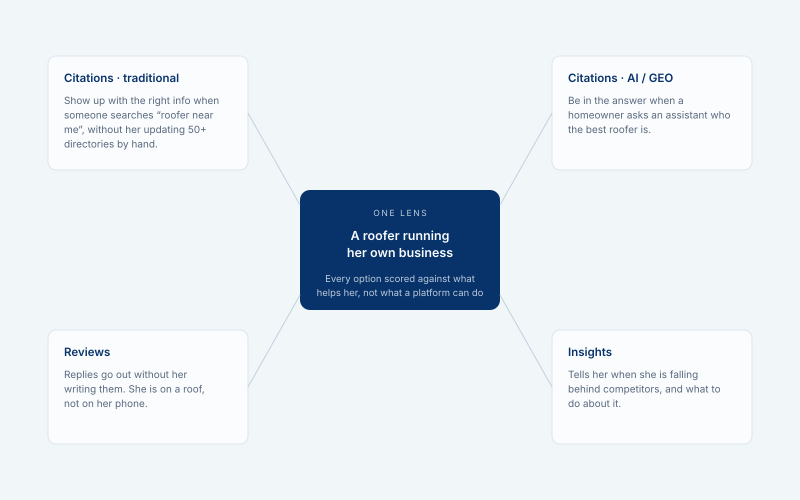
Design and research lead on the evaluation
I owned design and research on the proof of concept, and worked with one other designer so research and prototyping could run at the same time.
Combined the usability baseline
Our listings screens scored an A in three earlier usability studies. I combined those three studies into one bar any new vendor had to meet. Before that, “don’t make it worse” had no number behind it.
Specified an abstraction layer
I specified a layer between our interface and the vendor’s API, so the frontend would work with whichever backend was chosen.
Put an AI criterion in the scorecard
I got the AI interaction model added to the evaluation. Does the AI give her a draft to approve, or an empty box to type into? That became a requirement instead of a nice to have.
Built a live prototype
It ran on a real sandbox API instead of mock data, so every status and score on screen was live, and we judged each vendor on how it really behaved.
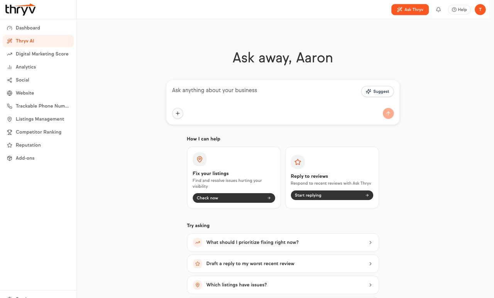
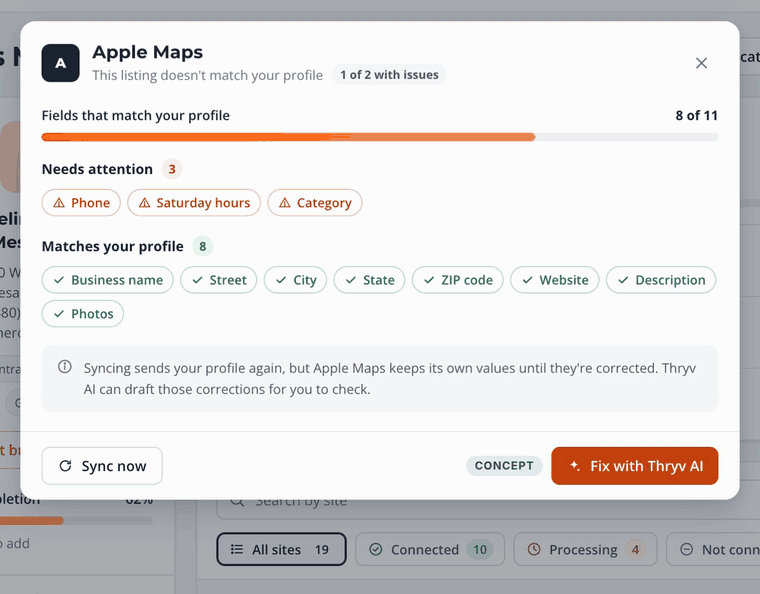
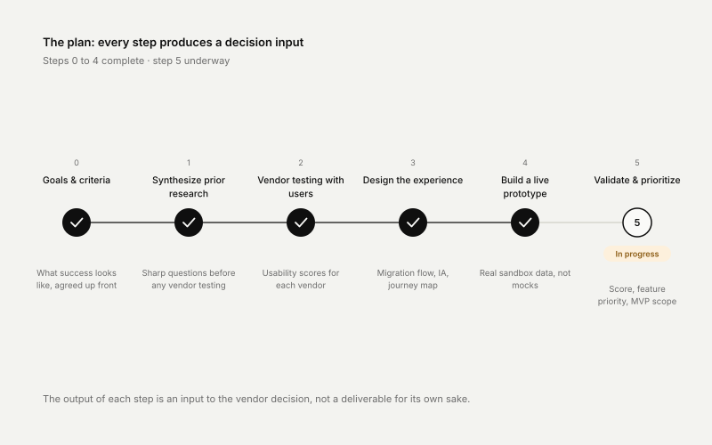
Keeping our UI separate from the vendor’s API
The integration raised three design problems. The vendor API returned fields that didn’t map cleanly to our patterns. What it could return limited what I could show, including partial states, delays while content generated, and AI output of varying confidence. And small business owners had to trust that AI written content described their business accurately.
The abstraction layer was my call. It meant that whichever vendor won, the frontend wouldn’t need to be rewritten.
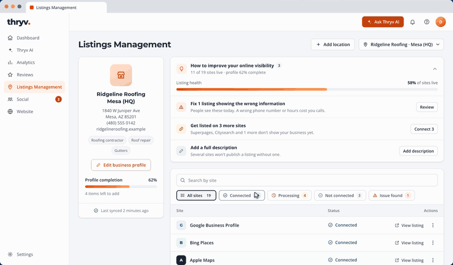
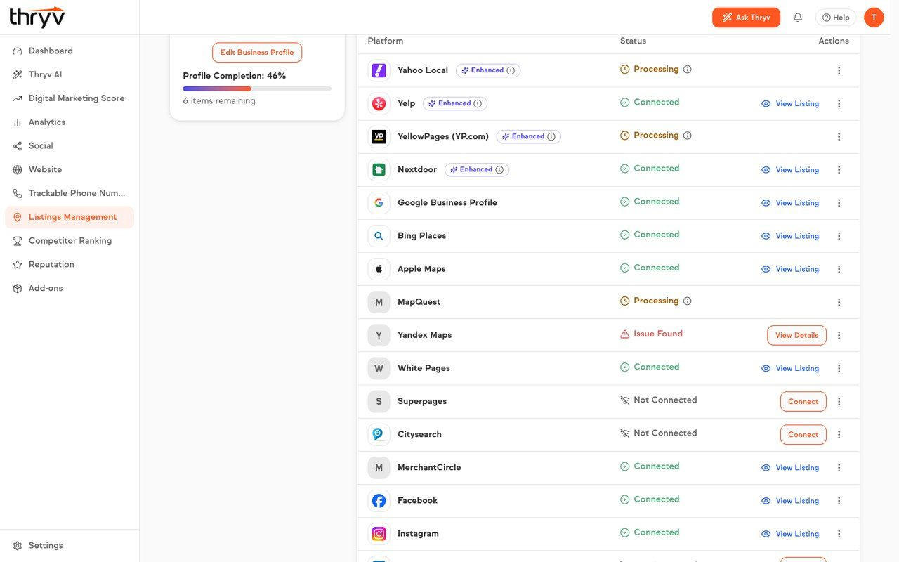
Three findings that shaped the design
Hours didn’t match how people think
People expect to mark a closed period inside their open hours, not split the day into two blocks. This came up in two separate studies.
Wording already confused people
Our existing terms already made people hesitate. Adding the vendor’s terms on top would make it worse.
People couldn’t tell what would happen
Before clicking, people couldn’t tell the difference between disabling a listing and disconnecting it.
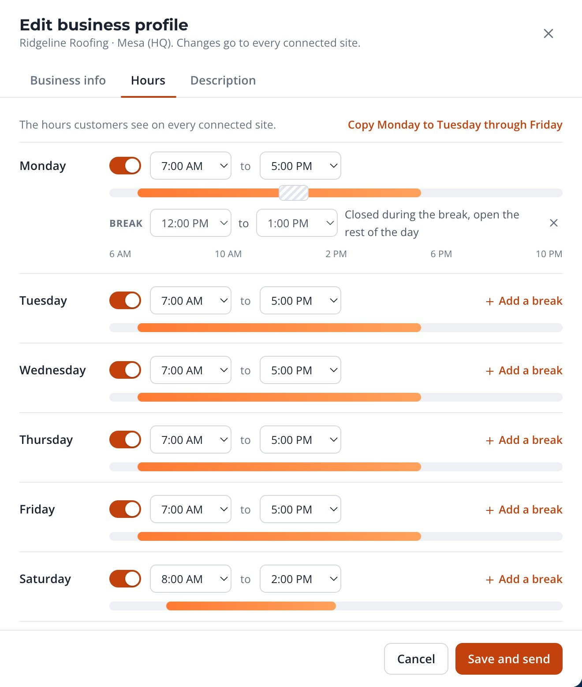
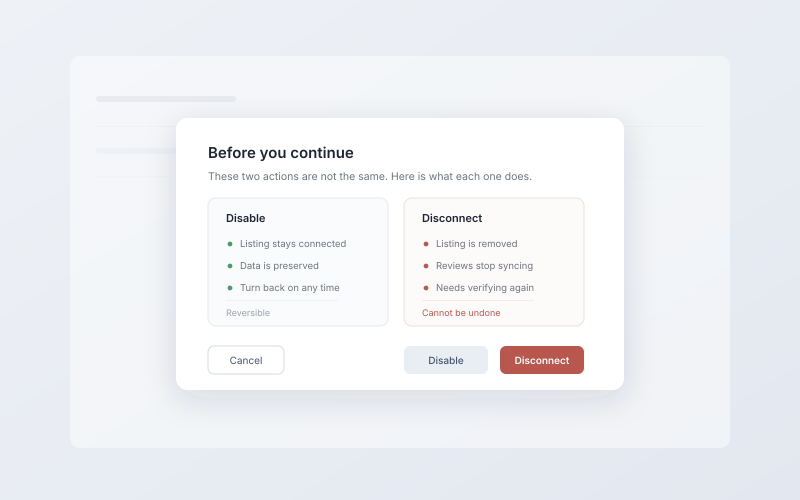
Reviews and posts on a phone
Business owners reply to reviews and check how their posts did on their phones, so the reviews and social pages had to work on a phone too, with the same Thryv AI drafts as on desktop.
Recorded from the interactive prototype, on demo data. Thryv AI is a concept.
The worst review first
Thryv AI opens with what needs attention: the negative reviews still waiting, and which one to answer first.
A reply in one tap
The suggested reply is ready when the review opens. Switch the tone or regenerate it, and Post reply stays pinned within reach.
Posts at a glance
Social leads with what failed, then how posts did, then the comments still waiting, each with a drafted answer.
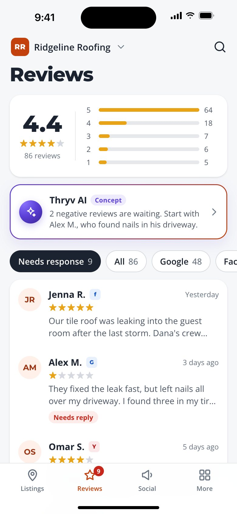
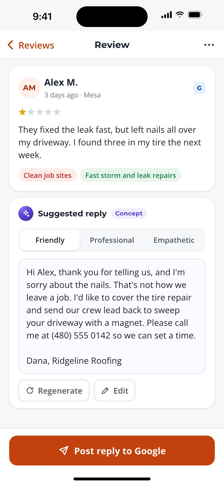
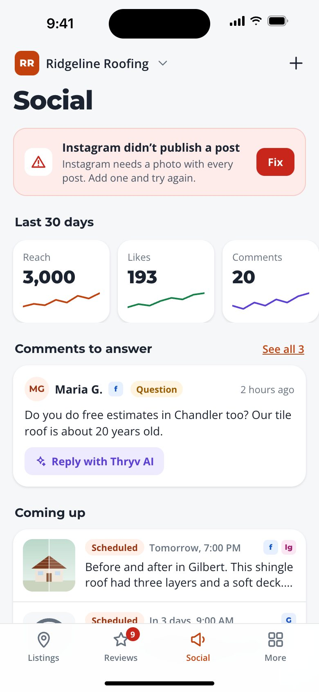
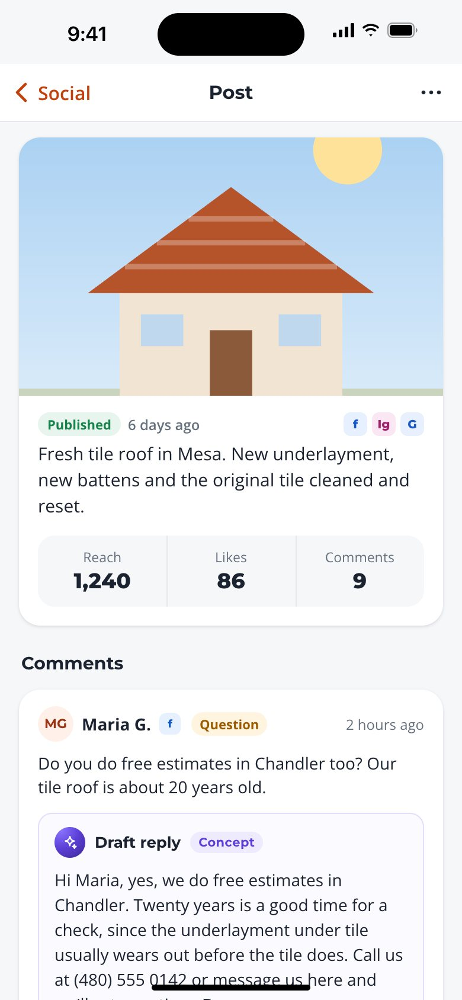
No launch numbers yet
The vendor has been chosen, but the new partner doesn’t go live until 2028, so there’s no adoption data yet. This is what I can show so far.